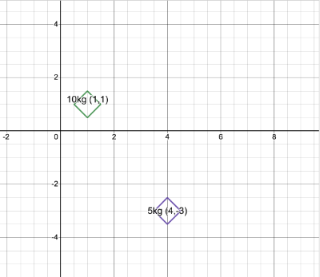
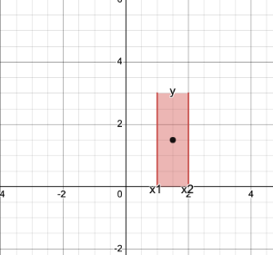
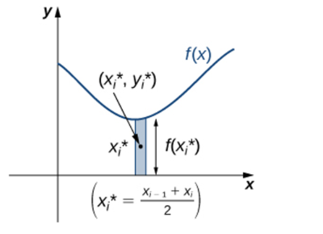

How do we compute the following?\[\int \frac{{1}}{x^2 - 1} dx\] First, notice that: \(\frac{1/2}{x-1} - \frac{1/2}{x+1} = \frac{{1}}{x^2 - 1}\) (Algebra! Get common denominators on the left side) Then: \(\int (\frac{1/2}{x-1} - \frac{1/2}{x+1})dx = \frac{{1}}{{2}}(\ln|x-1| - \ln|x+1|) + C\). So the question becomes: how do we go from \(\frac{{1}}{x^2 - 1}\) to \(\frac{1/2}{x-1} - \frac{1/2}{x+1}\)?
Example \[\frac{{1}}{(x+1)(x+2)} = \frac{{A}}{x+1} + \frac{{B}}{x+2}\]
How would I solve for \(A\) and \(B\)? \[\begin{align} \frac{{1}}{(x+1)(x+2)} = \frac{{A}}{x+1} + \frac{{B}}{x+2} = \frac{A(x+2) + B(x+1)}{(x+1)(x+2)} \end{align}\]
This is the method of Partial Fractions:
Decompose into partial fractions and integrate.
\[\int \frac{{1}}{x^2 - 6x + 5} dx\]
\[\frac{{1}}{(x+1)(x+2)(x+3)} = \frac{{A}}{x+1} + \frac{{B}}{x+2} + \frac{{C}}{x+3}\]
The center of mass \(x\) is the balancing point of the system. It is a hypothetical point where the entire mass of an object may be assumed to be concentrated to visualize its motion. In other words, the center of mass is the particle equivalent of a given object for application of Newton’s laws of motion. Let’s begin by looking at the center of mass in a one-dimensional context. Consider a long, thin wire or rod of negligible mass resting on a fulcrum.
Now suppose we place objects having masses \(m_1\) and \(m_2\) at distances \(d_1\) and \(d_2\) from the fulcrum, respectively:
The most common real-life example of a system like this is a playground seesaw, with children of different weights sitting at different distances from the center. On a seesaw, if one child sits at each end, the heavier child sinks down and the lighter child is lifted into the air. If the heavier child slides in toward the center, though, the seesaw balances. Applying this concept to the masses on the rod, we note that the masses balance each other if and only if \(m_1 d_1 = m_2 d_2\). In the seesaw example, we balanced the system by moving the masses (children) with respect to the fulcrum. However, we are really interested in systems in which the masses are not allowed to move, and instead, we balance the system by moving the fulcrum. Suppose we have two point masses, \(m_1\)and \(m_2\), located on a number line at points \(x_1\) and \(x_2\), respectively. The center of mass \(x\) is the point where the fulcrum should be placed to make the system balanced
For example, if, in the above image, the mass \(m_1\) is 10kg and is at position \(x_1=-2\), and \(m_2\) is 20kg at position \(x_2=2\), then the center of mass can be found algebraically. We look for \(x\) such that \(10(x + 2) = 20(2 - x)\). Solving for \(x\), we get \(10x + 20 = 40 - 20x\). Solve this equation and get \(20 = 30x\), or \(x = \frac{{20}}{{30}} = \frac{{2}}{{3}}\). 30 is the total mass of the system. 20 is the moment of the system with respect to the origin. The idea is that the center of mass is found by adding up the moments of each object, and dividing by the sum of their masses. The moment of an object with respect to a point is the mass of the object multiplied by the distance from that object to a point. In this case, we add up the moments of each object with respect to the origin.
Let’s do a similar example but in two dimensions. Suppose we have two objects with masses concentrated on points on the plane:

Then the center of mass of this system can similarly be found by adding up the moments of each object, and dividing by the total mass. But in two dimensions, we have to look at the moments of each object with respect to each axis. The moment of an object with respect to the \(x\)-axis, \(M_x\), is its mass multiplied by the \(y\)-value of its position. The moment with respect to the \(y\)-axis is the mass multiplied by the \(x\)-value of the position. We add up each individual moment to get the moments of the system. We add up the individual masses to get the mass of the system, \(m\). The center of mass is located at position \((\frac{M_y}{{m}}, \frac{M_x}{{m}})\). In other words, the center of mass is located at \((\frac{m_1x_1 + m_2 x_2}{m_1 + m_2}, \frac{m_1y_1 + m_2 y_2}{m_1 + m_2})\), which is similarly a kind of weighted average.
Now we assume that the masses of our objects are distributed continuously throughout a region. For some regions, it is not challenging to find its center of mass: if the region is a rectangle of uniform density \(\rho\), its center of mass is at the actual center of the rectangle.

For more complicated regions, we can approximate the region with rectangles as we do for areas. We still need to assume the region has uniform density, \(\rho\). We find the centers of mass of each of those rectangles, and use those to compute the center of mass for the region as a whole. In other words, we can assume that the entirety of the mass of each rectangle lies at its center (this is actually the entire point of the concept: the center of mass of an object is the point at which we can assume all of its mass is concentrated on, for the purposes of more complicated calculations.)Then we use the same idea above: use the moments and masses of each rectangle to compute \(M_x, M_y\),and \(m\), and then the center of mass is located at \((\frac{M_y}{{m}}, \frac{M_x}{{m}})\). The computation is as follows:

Suppose we have a region enclosed by a curve \(y=f(x)\). We split up our curve into rectangles. For one rectangle, its center is at \((\frac{x_i + x_{i+1}}{{2}}, \frac{f(x_i)}{{2}})\). Notice that the mass of each rectangle is its area multiplied by the density, \(\rho\): \[m = \rho f(x_i) \Delta x\] The moments of that rectangle are then computed as follows: \[\begin{{align}} M_x &= \frac{f(x_i)}{{2}} m \\ M_y &= \frac{x_i + x_{i+1}}{{2}} m \end{{align}}\] To simplify matters, we will assume that \(x_i\) and \(x_{i+1}\) are very close (as they will get closer to each other as \(n \rightarrow \infty\)). So \(M_y = x_i m\). Replacing \(m\) with \(\rho f(x_i) \Delta x\) in each of the above formulas, we have: \[\begin{{align}} M_x &= \frac{\rho}{{2}} (f(x_i))^2 \Delta x \\ M_y &= \rho x_i f(x_i) \Delta x \end{{align}}\]
We add up each of these moments to get the (approximation of the) moments of the entire region: \[\begin{{align}} M_x &= \sum_{i=1}^n \frac{\rho}{{2}} (f(x_i))^2 \Delta x \\ M_y &= \sum_{i=1}^n \rho x_i f(x_i) \Delta x \end{{align}}\] As \(n \rightarrow \infty\), these sums become integrals, and we get our exact formulas for the moments of the curve:
[\begin{align} M_x &= \frac{\rho}{{2}} \int_a^b f(x)^2 dx \\ M_y &= \rho \int_a^b x f(x) dx \end{align}\]The mass of the region can be found by similarly adding up the masses of each rectangle (\(\rho f(x_i) \Delta x\) ), and taking the limit as \(n \rightarrow \infty\). We end up with: \[m = \rho \int_a^b f(x) dx\] Our center of mass can be found using these formulas, at the coordinate \((\frac{M_y}{{m}}, \frac{M_x}{{m}})\). Notice that the density constant \(\rho\) will cancel out, so we can effectively ignore it (or just assume that it’s equal to 1).